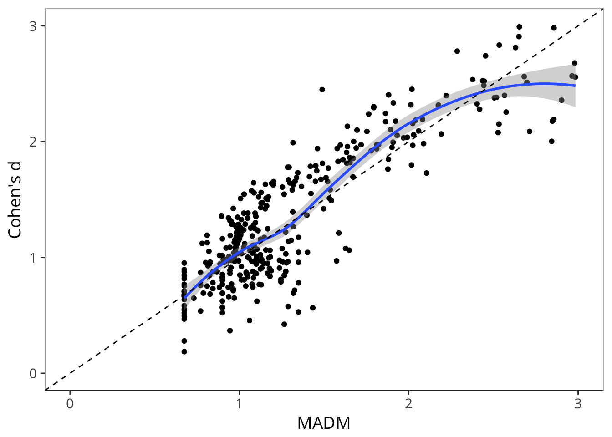
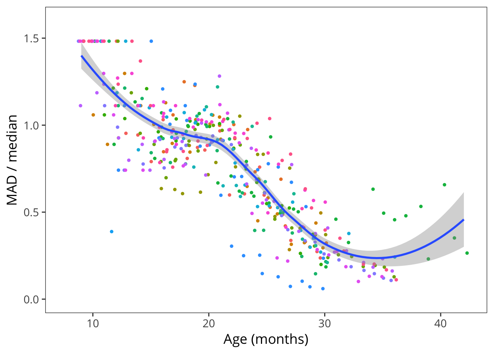

3 Vocabulary Development
3.1 Abstract
This chapter focuses on a particular view of the data, namely that each child is represented by a single vocabulary score: the proportion of words that child knows out of the total in the form. We begin by examining quantify the nature of variability across individuals and languages. We also note differences in form ceilings across languages. Then, the bulk of this chapter is devoted to different demographic predictors of vocabulary growth across languages (following the EFAI approach). We compare the effects of gender (female advantage), birth order (first-born advantage), and maternal education (socioeconomic status – SES – advantage).
3.2 Variability in vocabulary development
One of the most important features of early vocabulary development is its variability (L. Fenson et al. 1994). Consider the English production data from the Words and Sentences form.

It’s immediately clear that there is tremendous variability in vocabulary. Consider just a single age group, two-year-olds (24 months). The distribution of vocabularies across children is far from normally-distributed, with many children at the very bottom of the scale and almost as many at the top. Quite a few two-year-olds on their second birthday are producing only a handful of words (or at least their parents say they are) and others are producing more than 600 listed on the form, with the total number higher than that even.3

One way to describe these data is to consider the relationship of the variance to the central tendency. For example, in this age group, the mean productive vocabulary is 317 words, and the standard deviation is 175 words. But this distribution is far from normal (especially at the younger and older ages), so a non-parametric approach is warranted. We can compute the median absolute deviation from the median (MAD), which captures how far away values are from the median (a measure of variance, similar to the inter-quantile range or IQR) and divide by the median itself, giving us an intuitive sense of how the spread of the data relates to the central tendency. We’ll call this number the MMAD.

In English production, this ratio is actually close to 1 from age one until almost age two, suggesting that the standard difference from the median is actually as big as the median itself! The decline begins before variability is substantially truncated by the ceiling of the form, suggesting that variability between kids is really highest before the second birthday. The same pattern is generally found across the languages in our database, with very high variance between the first and second birthdays. What does this MADM measure mean, exactly? It’s a non-parametric version of Cohen’s \(d\). In fact, they are very highly correlated.

Imagine groups of three children. A group where one produced 30 words, one produced 100, and another produced 170 would have a MADM of 0.99. In contrast, one where they were more closely grouped – say 70, 100, 130 – would have a MADM of 0.44.


The next figure shows MADM across languages and instruments. This similarity in variability structure is quite striking, such that between the first and second birthdays, language is remarkably variable. Below, we will use this variability as a way to measure the size of demographic effects. For example, how much variability is due to gender, compared with simple population variability?
3.3 Norms
This set of analyses examines general patterns of vocabulary development.
Here we examine general patterns of variability across languages.
3.3.1 Comprehension

3.3.2 Production
Words and Gestures.

Words and Sentences

3.3.3 Comparions of Variability on Comprehension and Production
It will quickly get tiresome to acknowledge ceiling effects and parent report biases in every sentence, so we will acknowledge them up front and then mention them only when relevant throughout.↩